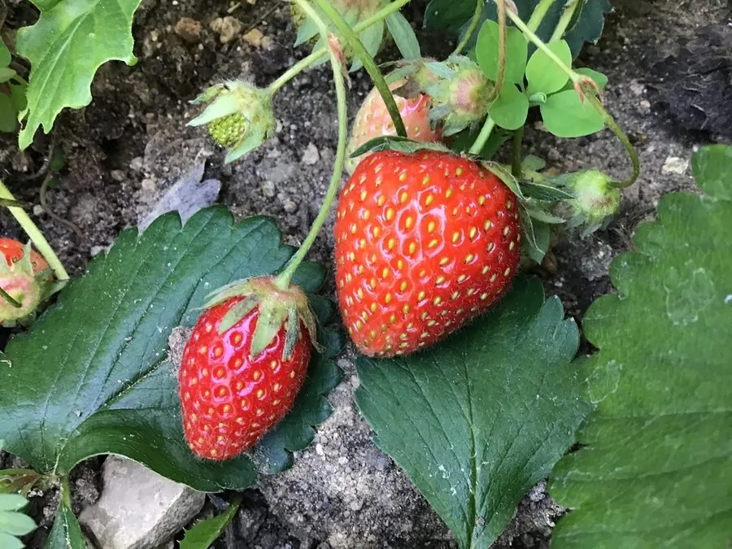

农作物与经济植物 · 植物界
草莓 Fragaria × ananassa

草莓的果实香甜多汁、富含维生素 C，是重要的浆果类水果，可鲜食、制酱和速冻，设施栽培十分普遍。
- 分类
- 门被子植物门纲双子叶植物纲目蔷薇目科蔷薇科属草莓属
- 栖息环境
- 温带凉爽湿润的田园与温室，喜光照充足、疏松肥沃土壤
- 地理分布
- 为园艺杂交种，现主产于中国、美国、墨西哥、西班牙等地
- 保护级别
- 暂无评估（栽培作物）
物种志
草莓是蔷薇科多年生草本，株高 10–40 cm，有短缩茎和须根，茎上抽生匍匐茎，可繁殖新株。叶为三出复叶，小叶倒卵形，边缘有锯齿，表面有毛。花白色，五瓣，聚伞花序。我们食用的“果实”其实是花托膨大形成的聚合假果，表面密生的“籽”才是真正的瘦果，成熟时呈红色。
现代栽培草莓由北美洲的弗吉尼亚草莓与南美洲的智利草莓杂交而来，18 世纪在欧洲培育成功，是杂交种。它喜凉爽湿润、光照充足，耐寒性较强，适宜在疏松肥沃、排水良好的土壤中种植，常用匍匐茎分株或组培苗繁殖，也常进行温室促成栽培。草莓果实香甜多汁，富含维生素 C、花青素和膳食纤维，可鲜食、制果酱、速冻和加工果汁。中国是世界上最大的草莓生产国，辽宁、山东、河北等地为主产区。
形态与习性
- 株高10–40 cm
- 叶三出复叶，边缘有锯齿
- 花白色，五瓣
- 果实聚合假果，表面瘦果即“籽”
- 繁殖匍匐茎分株或组培苗
- 营养富含维生素 C 与花青素
趣味知识
- 我们吃的草莓“果肉”其实是膨大的花托，表面的“籽”才是真正的果实。
- 现代草莓是两种美洲草莓杂交而来的园艺杂交种。
- 草莓富含维生素 C，是常见浆果中维生素 C 含量较高的种类。